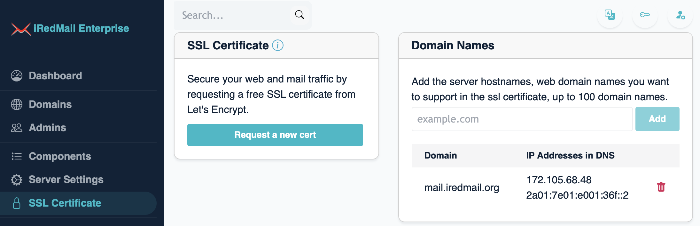

Since version v1.3.0, EE supports requesting free ssl certificate from Let's Encrypt and renew it automatically.
Login to EE web ui as global admin, click SSL Certificate on left sidebar.

Input the domain names you want to support in the ssl cert under the Domains Names card.
After you input the domain names, EE queries DNS and displays all IP addresses, so that you can quickly verify whether they are pointed to this EE server.

Once you have all domain names, click the Request a new cert button to
request the cert.
After successfully requested, EE displays the valid date and renewal date on web UI. It will renew the cert right on time automatically and send email notification to administrator.
If you add or remove some domain names after requested, please click the
Request a new cert button again to get a new cert.
If you prefer a purchased cert or whatever, you can remove this free cert by
click the Delete button. Be careful, EE does not remove the cert files on
disk, also not restart or reload network services, you must replace the cert
files manually, then restart services.
Certificate files:
/opt/iredmail/ssl/key.pem/opt/iredmail/ssl/combined.pemIf you use tool like certbot on this EE server before, you should remove
the cron job used to renew the cert, also remove script /etc/cron.d/certbot
added by certbot package. It's better remove package certbot completely
since you don't need it anymore and avoid possible conflict.